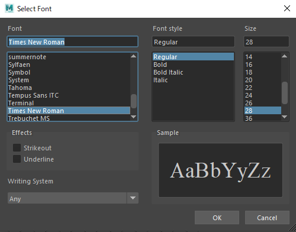

Text¶
Contents of this page:
Overview¶
RenderOverride allows you to freely customize the text to be displayed by using the RenderOverride node
Font, color, opacity, size, and display position offset can be set for text
Multiple lines can be displayed
In addition to the usual string specifications, complex information can be displayed using Python or MEL commands
For example, entering the MEL code
ls -selectionwill display a list of the objects selected in the sceneIt can also be combined with the Actions attribute of the RenderOverride node to display action information (this feature is especially useful when creating game motions. (Actions (using external Python files)))
{kind=link}
Attributes¶
Text group¶
There are nine
Text groupsavailable.Group Name
Where to display within ResolutionGate (Text align)
Text [Top Left]
Top Left (Left)
Text [Top Center]
Top Center (Center)
Text [Top Right]
Top Right (Right)
Text [Center Left]
Center Left (Left)
Text [Center]
Center] (Center)
Text [Center Right]
Center Right (Right)
Text [Bottom Left]
Bottom Left (Left)
Text [Bottom Center]
Bottom Center (Center)
Text [Bottom Right]
Bottom Right (Right)
Text can be set for each display position
ResolutionGate is the standard for the position to be displayed
Attributes within each group¶

Attributes within each group have the same configuration
(Summary of each attribute)
Attribute |
Summary |
|---|---|
Enable |
Enable/disable for each group |
Generate Type
|
Select “String” to display the characters as they appear in the
Text String attribute.If you want to run a script, select ” Python ” or ” MEL “.
|
Text String |
Enter the text you want to display. If you want the script to run, write the code. |
Text Color
|
Text Color
(There is a problem that changes are not reflected in real time after the color is set.
|
Text Opacity |
Text opacity (0.0: transparent, 1.0: opaque) |
Fit text size to letterbox |
Match the font size to the size of Letterbox. |
Text Scale |
Multiply the automatically calculated text size by the scale. |
Offset X (%) |
Offset value for the horizontal axis. Specifies the offset as a percentage of the ResolutionGate width. |
Offset Y (%) |
Offset value for the vertical axis. Specifies the offset as a percentage of the ResolutionGate height. |
Font |
Set the font, which can be edited via the |
Enable¶
Text in each position can be turned on or off individually
If text is not displayed, check to see if this attribute is turned on
Generate Type¶
String
Select ” String ” to display the characters described in the
Text Stringattribute as they are.
Python
If you want to run Python code, select “Python”.
If you want to run external files (.py, etc.), you need to pass
PYTHONPATHin advance.
MEL
If you want to run MEL code, select “MEL”
If you want to run an external file (.mel), please make sure that Maya® can recognize it in your environment.
Text String¶
Write the plain text to be displayed or the code to be executed.
(If Generate Type is String, then)¶
Type the characters you want to display
Insert a line break code (
\n) between lines to break linesExample:
1st line\n2nd line
If you enter a keyword (variable) with the pre-prepared keywords enclosed in curly brackets (
{}), the value will be substituted and displayed.Example:
{FOCAL_LENGTH}=>35.0
You can also combine keywords with regular strings
Example:
{FOCAL_LENGTH}mm=>35.0mm
Display options (the format after the colon in curly brackets) can be used to control the output, for example, to “align the decimal point”.
Example:
{FOCAL_LENGTH:.3f}=>35.000(align decimal point to 3 digits)display options conform to Formatted String Literals .
(Keywords (variables) and their meanings)
Keywords (variables) |
Meaning |
Value to be replaced (e.g.) |
|---|---|---|
ANIM_START_TIME |
Animation start time |
1.0 |
ANIM_END_TIME |
Animation end time |
48.0 |
MIN_TIME |
Start time of time range of playback |
5.0 |
MAX_TIME |
End time of time range of playback |
24.0 |
CUR_TIME |
Current Time |
10.0 |
SCENE_NAME |
Maya® file name (“Untitled” if the file is not saved) |
PRJ_ChrA_model_v001.ma |
CAM_NAME |
Camera name in view |
persp |
FOCAL_LENGTH |
Camera focal length |
35.0 |
USER |
Name of the user logged in to the machine |
JohnSmith |
DATE_JP |
Today’s date (Japanese format) |
2022/04/25 |
DATE_US |
Today’s date (American format) |
Apr 25, 2022 |
DATE_UK |
Today’s date (UK format) |
14 Apr 2022 |
(Example of a combination of keywords, characters, and display options (Formatted String Literals))
Value to be entered for the attribute |
Output Example |
Remarks |
|---|---|---|
[{MIN_TIME:.0f} - {MAX_TIME:.0f}] {CUR_TIME:03.0f} |
[1 - 48] 005 |
Displays the “start/end time” of the playback time range and the current frame.
You can remove the decimal point with
:.0f after the keyword (“zero decimal places”).The
:03.0f after the keyword allows you to remove the decimal portion and make the integer portion 3 digits. |
|
|
Displays the focal length with one decimal place ( |
(When Generate Type is Python or MEL)¶
To run an external Python script, write the following (make sure Maya® can recognize it through
PYTHONPATHor something similar)import actions;actions.actions_text()
An example utilizing Python scripts can be found at here.
To execute the MEL command directly, write
ls -selection
A list of selected objects is displayed
(Apply preset from right click)¶
Right-clicking on a text box brings up a menu
Selecting any of the presets will update the
Generate TypeandText Stringattributes
Text Color¶
Sets the text color
Note
There is a problem that changes are not reflected in real time after the color is set.
more info… [Changing the color of the “Color” attribute is not immediately reflected in the view.]
Text Opacity¶
Sets the opacity of the text
Fit text size to letterbox¶
Adjust the size of the text to match the height of Letterbox.

If the text is multiple lines, all lines will be adjusted to fit in the letterbox.

If the height of the letterbox is not high enough, the text may overhang the letterbox because it tries to keep the text at least 10px.

Text Scale¶
Multiply the automatically calculated text size by the scale
By default, the text size is automatically calculated according to the ResolutionGate height
If the
Fit text size to letterboxattribute is on, the text size will be automatically calculated according to the letterbox height.
If the text size is less than 10px after scaling, it will be fixed at 10px.
Offset X (%)¶
Specifies the percentage of the horizontal axis to be offset from the automatically calculated position.
Calculated based on the width of ResolutionGate.
Offset Y (%)¶
Specifies the percentage of the vertical axis to be offset from the automatically calculated position.
Calculated based on the height of ResolutionGate.
Font¶
You can specify font family, thickness, italics, underlining, etc.
Attributes cannot be edited directly, so use the Font Dialog/Set Default button
Font Dialog
FontDialog is displayed
In this dialog, set
Font,Font style,Strikeout, andUnderline.Warning
Size does not apply
(Since it is automatically calculated according to the ResolutionGate height)
Adjust the text size by multiplying the automatically calculated size by the
Text Scalevalue
Strikeout and Underline cannot be used at the same time
If both are checked, Underline takes precedence
Set Default
Set to Maya® default font